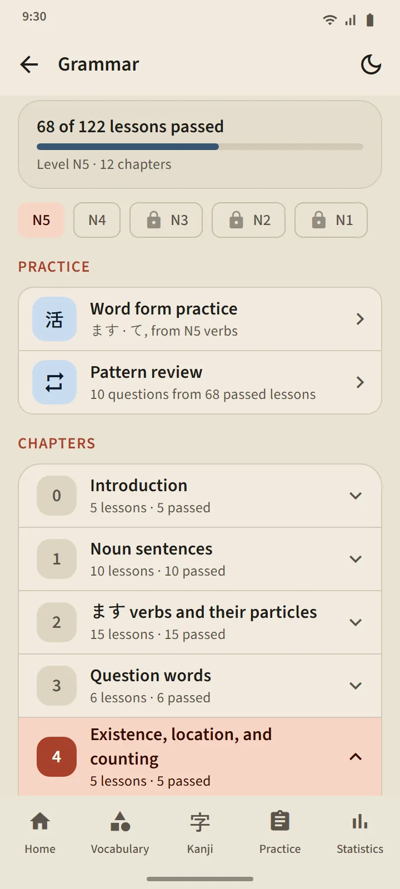
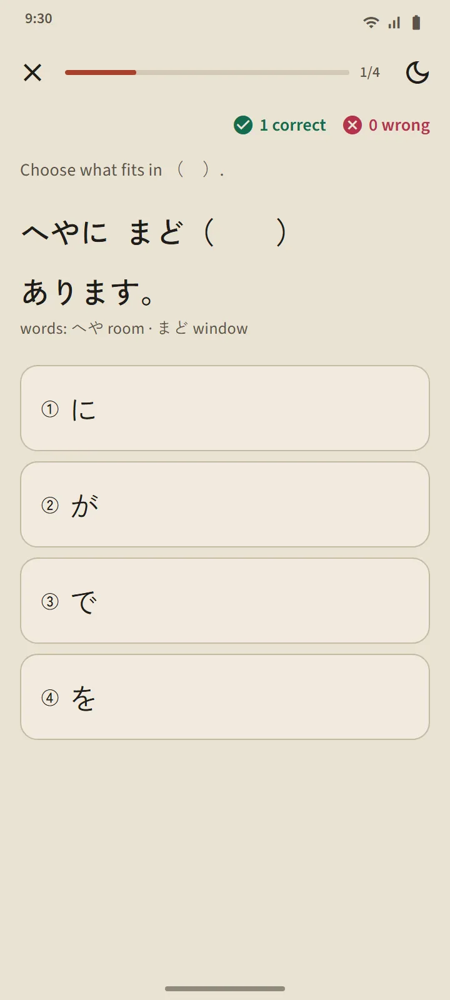
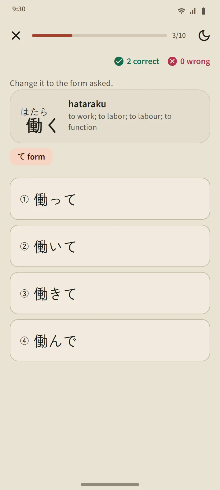
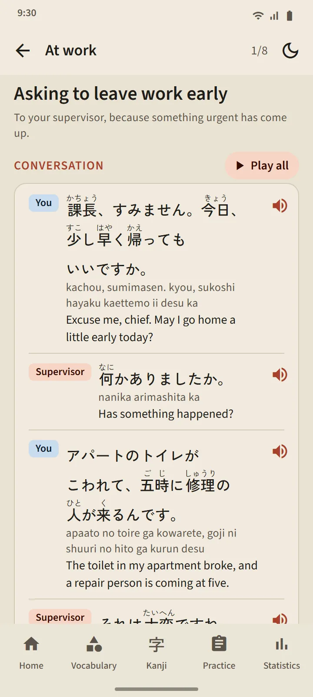

Five levels, 268 lessons
The Grammar page opens from the "Japanese basics" section of the home screen. Chips at the top switch between N5, N4, N3, N2 and N1; chapters expand in place, and each lesson is marked not opened, read, or practice passed. N5 covers every pattern in the N5 practice exams, and N3 to N1 cover the patterns asked in the practice exams of those levels.
| Level | Lessons | Access |
|---|---|---|
| N5 | 122 | Free |
| N4 | 56 | Free |
| N3 | 25 | Premium |
| N2 | 26 | Premium |
| N1 | 39 | Premium |

The shape of a lesson
Every lesson follows the same layout: the pattern and its meaning, How to form it (the formula, with example words), Notes, Examples with furigana you can listen to, and Don't confuse with for similar patterns. Japanese sentences only wrap between phrases so they stay readable on small phones.
Practice with explanations
The button at the bottom of a lesson opens a practice of three to five questions. Each answer comes with an explanation; a lesson counts as passed with at most one wrong answer, and unpassed ones can be repeated. Results are recorded on the Grammar page and in the Statistics tab.

Word form practice and pattern review
The Practice section of the Grammar page has two exercises. Word form practice turns N5 verbs into their ます, て, ない, dictionary and た forms; each form opens once its lesson is passed, and every answer explains the rule. Pattern review asks up to 10 questions from lessons you have passed, the ones reviewed longest ago first. In exam practice, grammar questions link to their lesson with "Learn this pattern".

Phrases & Conversations
48 short conversations in 12 situations: introductions, small talk, at work, shops, restaurants, stations, hospitals and pharmacies, the phone, government offices, banks and post offices, housing and neighbours, and emergencies. Each has lines with furigana, romaji and meanings, a Play all button that reads it with a different voice for each speaker, key phrases, and a short practice. The first 3 situations are free.

In your language
Notes, example meanings, answer choices and explanations are available in 14 languages: English, Indonesian, Vietnamese, Burmese, Nepali, Thai, Sinhala, Filipino, Hindi, Bengali, Mongolian, Khmer, Korean and Traditional Chinese. The Japanese sentences, formulas and answer keys are the same in every language. Lessons were written for TokuGo and then audited; open sources were used only for cross-checking.